0. 課程資訊與教材
| 課程名稱 | 「不想花大錢，也能體驗 AI agent：OpenCode 篇」 |
|---|---|
| 頻道 | 生成式 AI 應用電台・晨學講堂 |
| 直播日期 | 2026/07 直播 |
| 教材 | 官方課程簡報 21 頁（其中 16 頁為圖文完整內容頁，其餘為分節標題過場頁） |
| 一句話先懂 | OpenCode 是一套開源、可自由切換任意模型（Claude、GPT、Gemini、Ollama…）的終端機 AI Coding Agent，重點是「低成本也能體驗完整 Agent 工作流」——從安裝到 Skill、MCP、語音操作都免費開源。 |
1. 一張圖看懂學習途徑
簡報一開場就把整堂課的學習路徑畫成一張圖：入門 → 核心操作 → 進階應用三大階段、共 10 個步驟。（簡報 p2）
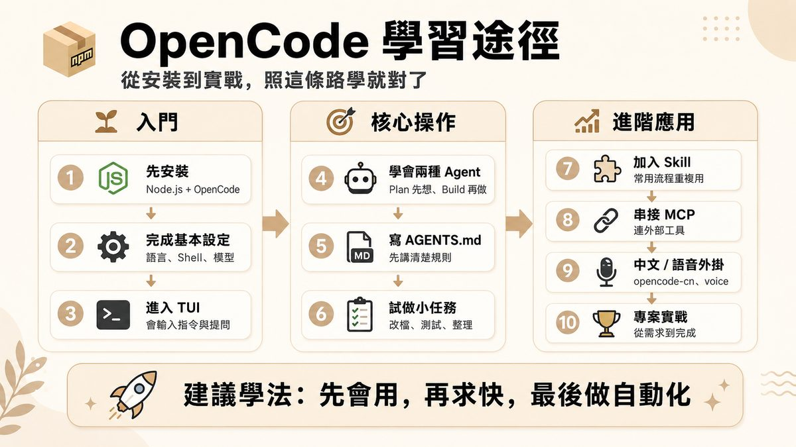
| 階段 | 步驟 |
|---|---|
| ① 入門 | 1 先安裝（Node.js + OpenCode）→ 2 完成基本設定（語言、Shell、模型）→ 3 進入 TUI（會輸入指令與提問） |
| ② 核心操作 | 4 學會兩種 Agent（Plan 先想、Build 再做）→ 5 寫 AGENTS.md（先講清楚規則）→ 6 試做小任務（改檔、測試、整理） |
| ③ 進階應用 | 7 加入 Skill（常用流程重複用）→ 8 串接 MCP（連外部工具）→ 9 中文／語音外掛（opencode-cn、voice）→ 10 專案實戰（從需求到完成） |
2. AI 使用方式的演進：從 Chat 到 Agent
AI 已經從單純的 Chat，走到能自主完成工作的 Agent。（簡報 p4）
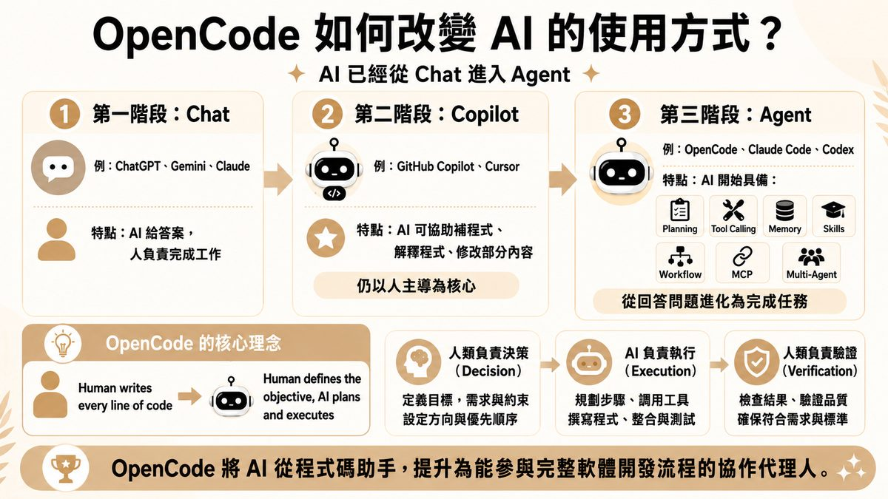
| 階段 | 代表工具 | 特點 |
|---|---|---|
| ① Chat | ChatGPT、Gemini、Claude | AI 給答案，人負責完成工作 |
| ② Copilot | GitHub Copilot、Cursor | AI 可協助補程式、解釋程式、修改部分內容；仍以人主導為核心 |
| ③ Agent | OpenCode、Claude Code、Codex | AI 開始具備 Planning、Tool Calling、Memory、Skills、Workflow、MCP、Multi-Agent，從回答問題進化為完成任務 |
OpenCode 的核心理念
- 人類負責決策（Decision）：定義目標，需求與約束，設定方向與優先順序。
- AI 負責執行（Execution）：規劃步驟、調用工具、撰寫程式、整合與測試。
- 人類負責驗證（Verification）：檢查結果、驗證品質，確保符合需求與標準。
3. 為什麼 OpenCode 值得學：五大特色
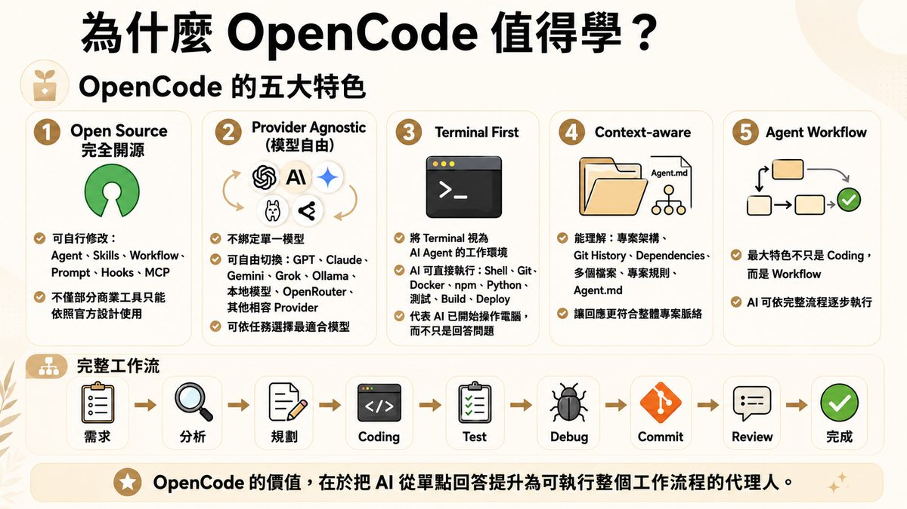
| 特色 | 說明 |
|---|---|
| ① Open Source（完全開源） | 可自行修改 Agent、Skills、Workflow、Prompt、Hooks、MCP，不僅部分商業工具只能依照官方設計使用。 |
| ② Provider Agnostic（模型自由） | 不綁定單一模型，可自由切換 GPT、Claude、Gemini、Grok、Ollama、本地模型、OpenRouter 及其他相容 Provider，依任務選擇最適合模型。 |
| ③ Terminal First | 將 Terminal 視為 AI Agent 的工作環境，可直接執行 Shell、Git、Docker、npm、Python、測試、Build、Deploy——代表 AI 已開始操作電腦，而不只是回答問題。 |
| ④ Context-aware | 能理解專案架構、Git History、Dependencies、多個檔案、專案規則、Agent.md，讓回應更符合整體專案脈絡。 |
| ⑤ Agent Workflow | 最大特色不只是 Coding，而是 Workflow——AI 可依完整流程逐步執行。 |
完整工作流：從需求到完成
需求 → 分析 → 規劃 → Coding → Test → Debug → Commit → Review → 完成
4. OpenCode 是什麼：AI Coding Agent 的新世代
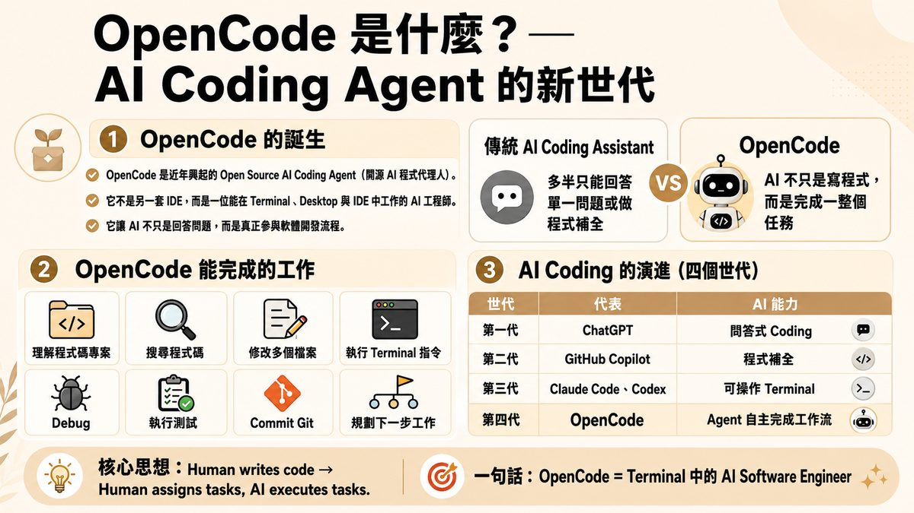
- OpenCode 是近年興起的 Open Source AI Coding Agent（開源 AI 程式代理人）。
- 它不是另一套 IDE，而是一位能在 Terminal、Desktop 與 IDE 中工作的 AI 工程師。
- 它讓 AI 不只是回答問題，而是真正參與軟體開發流程。
傳統 AI Coding Assistant vs OpenCode
| 傳統 AI Coding Assistant | OpenCode |
|---|---|
| 多半只能回答單一問題或做程式補全 | AI 不只是寫程式，而是完成一整個任務 |
OpenCode 能完成的工作
理解程式碼專案・搜尋程式碼・修改多個檔案・執行 Terminal 指令・Debug・執行測試・Commit Git・規劃下一步工作
AI Coding 的演進（四個世代）
| 世代 | 代表 | AI 能力 |
|---|---|---|
| 第一代 | ChatGPT | 問答式 Coding |
| 第二代 | GitHub Copilot | 程式補全 |
| 第三代 | Claude Code、Codex | 可操作 Terminal |
| 第四代 | OpenCode | Agent 自主完成工作流 |
5. 安裝 OpenCode：先到官網
桌面版與指令安裝都可以。（簡報 p8-9）
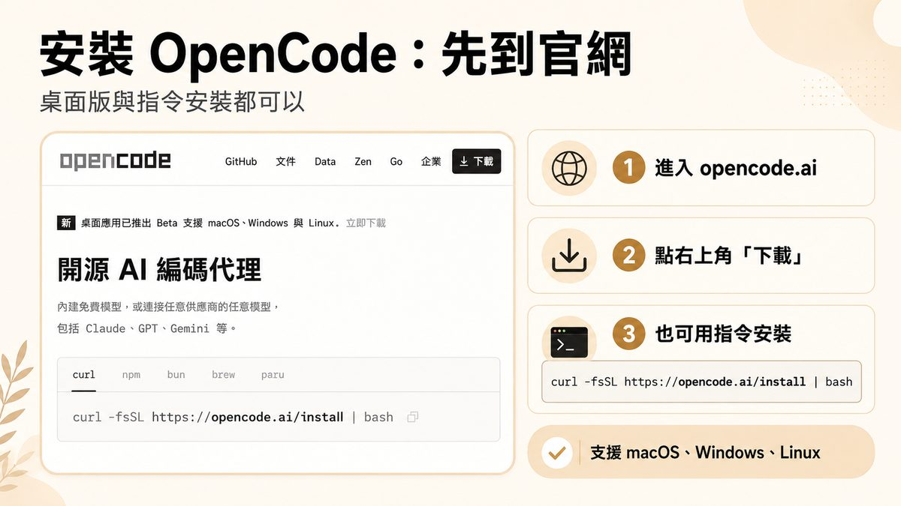
- 進入 opencode.ai：桌面應用已推出 Beta，支援 macOS、Windows 與 Linux，立即下載。
- 點右上角「下載」：開源 AI 編碼代理，內建免費模型，或連接任意供應商的任意模型，包括 Claude、GPT、Gemini 等。
- 也可用指令安裝：
curl -fsSL https://opencode.ai/install | bash（也支援 npm、bun、brew、paru），支援 macOS、Windows、Linux。
6. 第一次開啟先設定：4 項就夠了
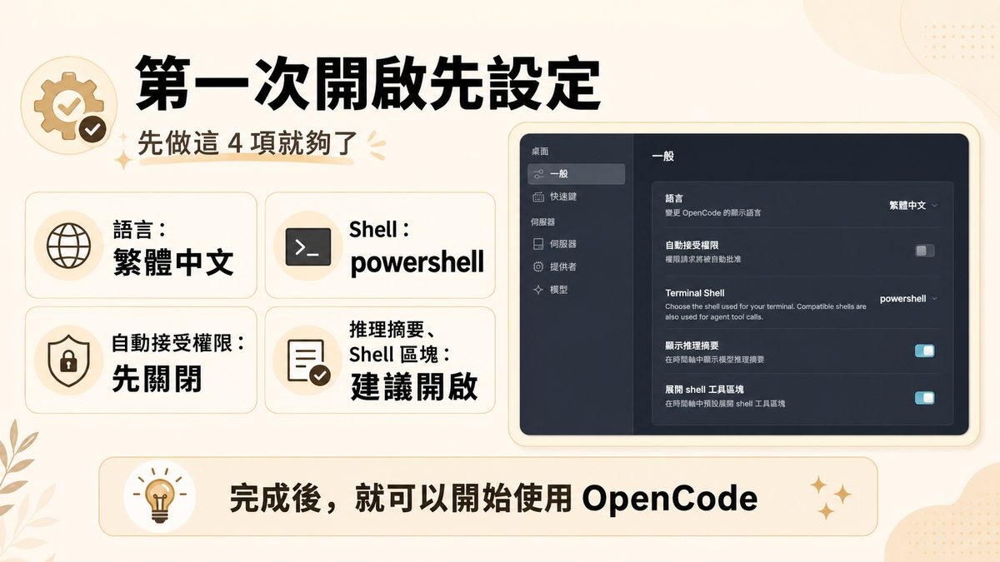
| 設定項 | 建議值 |
|---|---|
| 語言 | 繁體中文（變更 OpenCode 的顯示語言） |
| Shell | powershell（Windows；選擇終端機使用的 Shell，Agent 工具呼叫也會用同一個） |
| 自動接受權限 | 先關閉（開啟代表權限請求將被自動批准） |
| 推理摘要／Shell 區塊 | 建議開啟（在時間軸中顯示模型推理摘要、預設展開 shell 工具區塊） |
7. 用 npm 安裝，進入 OpenCode 的 TUI
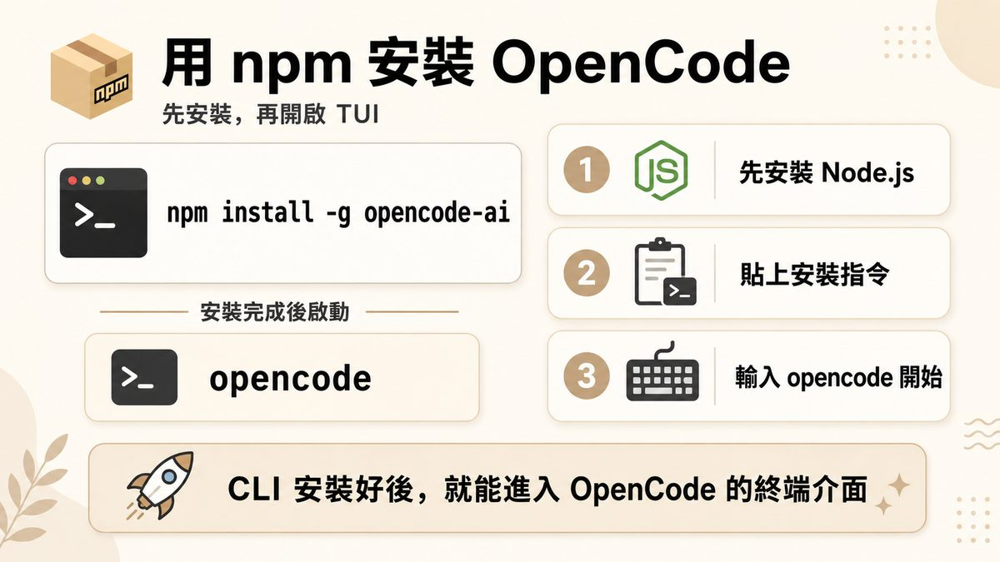
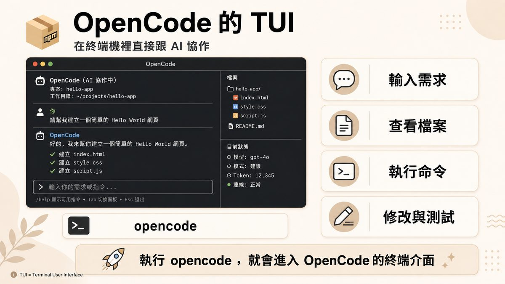
npm 安裝三步驟
- 先安裝 Node.js。
- 貼上安裝指令：
npm install -g opencode-ai。 - 輸入 opencode 開始：安裝完成後執行
opencode，就能進入 OpenCode 的終端介面。
TUI 畫面組成
- 左側對話區：顯示「你」與「OpenCode」的往來訊息，例如「請幫我建立一個簡單的 Hello World 網頁」，OpenCode 會逐步建立
index.html、style.css、script.js並打勾確認。 - 右側檔案區：即時顯示目前專案的檔案樹（如
hello-app/）。 - 底部目前狀態：顯示模型（如 gpt-4o）、模式（建議）、Token 用量與連線狀態。
- 操作提示：
/help顯示可用指令、Tab切換面板、Esc退出。
8. 建立 AGENTS.md：把專案規則先講清楚
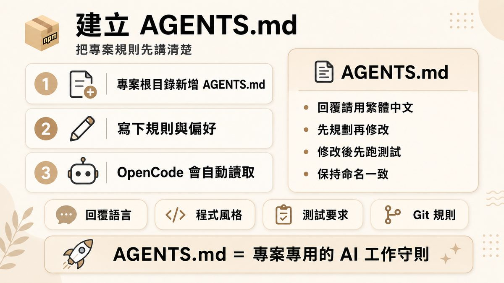
- 專案根目錄新增 AGENTS.md。
- 寫下規則與偏好：回覆語言、程式風格、測試要求、Git 規則。
- OpenCode 會自動讀取——不用每次對話重講一次。
建議內容包含：回覆請用繁體中文、先規劃再修改、修改後先跑測試、保持命名一致。
9. SKILL 與 MCP：把常用任務變技能、接外部工具
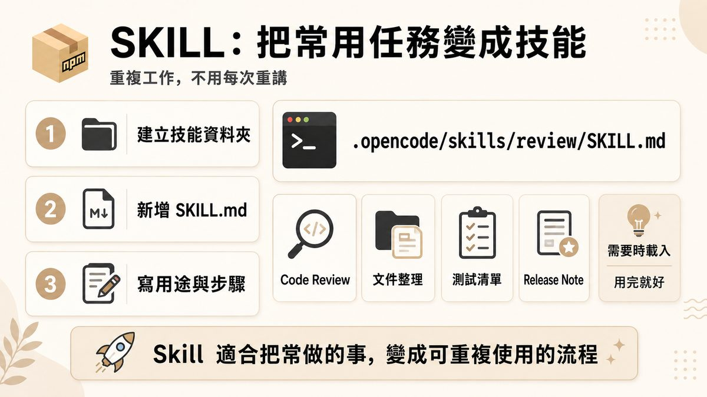
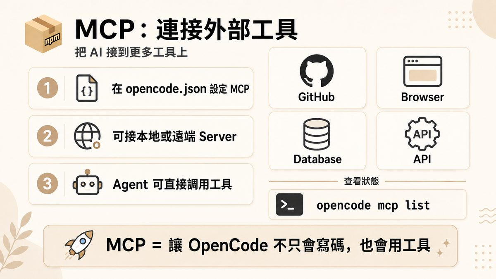
SKILL 三步驟
- 建立技能資料夾：例如
.opencode/skills/review/SKILL.md。 - 新增 SKILL.md。
- 寫用途與步驟：例如 Code Review、文件整理、測試清單、Release Note，需要時載入、用完就好。
MCP 三步驟
- 在 opencode.json 設定 MCP。
- 可接本地或遠端 Server：GitHub、Browser、Database、API 等。
- Agent 可直接調用工具；用
opencode mcp list查看目前狀態。
10. 兩種主要 Agent：Build 負責做，Plan 負責想
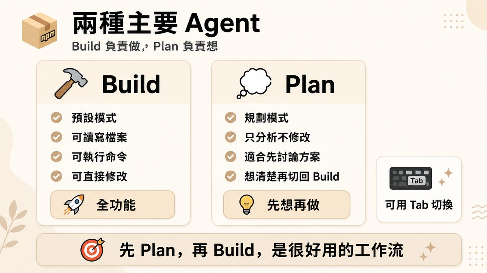
| Agent | 特性 |
|---|---|
| Build | 預設模式・可讀寫檔案・可執行命令・可直接修改（全功能） |
| Plan | 規劃模式・只分析不修改・適合先討論方案・想清楚再切回 Build（先想再做） |
可用 Tab 鍵在兩種 Agent 間切換。
11. 語音外掛：opencode-voice
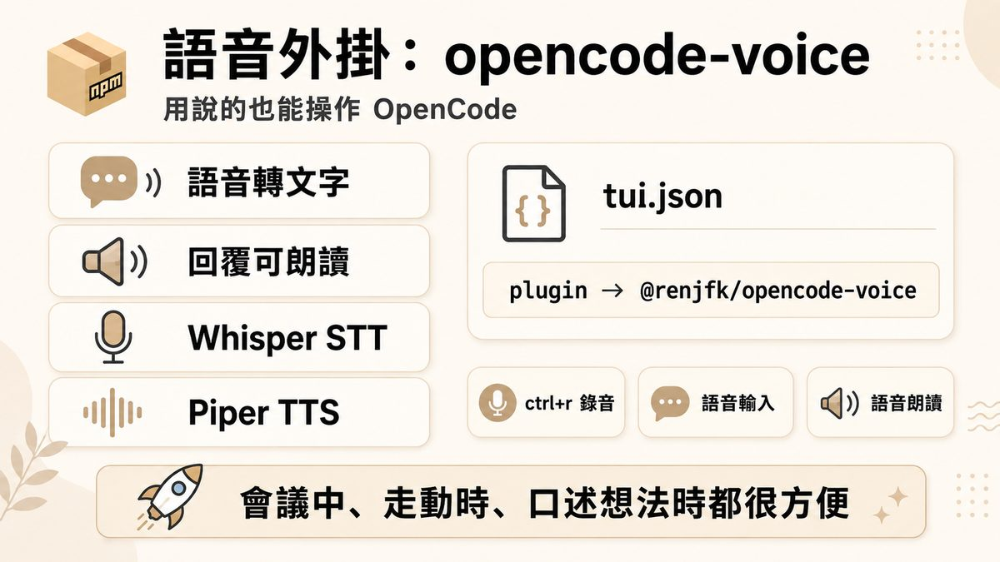
- 語音轉文字（Whisper STT）＋回覆可朗讀（Piper TTS）。
- 設定方式：於
tui.json加入plugin → @renjfk/opencode-voice。 - 操作方式：ctrl+r 錄音、語音輸入、語音朗讀。
12. OpenCode Zen vs Go 差異比較
Zen 與 Go 都是 OpenCode 團隊提供的可選 Provider（皆非必用），但定位與計費方式不同。（簡報 p20，依官方資料整理，簡報標註「推測 Len 指 Zen」）
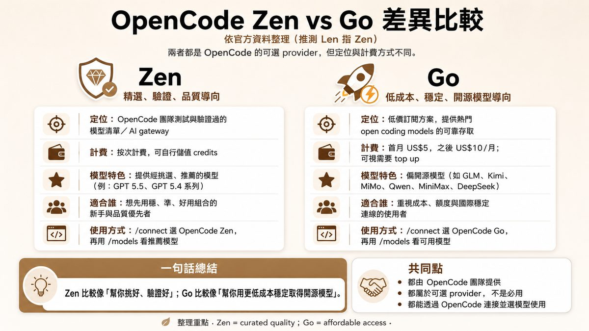
| 項目 | Zen | Go |
|---|---|---|
| 定位 | OpenCode 團隊測試與驗證過的模型清單／AI gateway | 低價訂閱方案，提供熱門 open coding models 的可靠存取 |
| 計費 | 按次計費，可自行儲值 credits | 首月 US$5，之後 US$10/月；可視需要 top up |
| 模型特色 | 提供經挑選、推薦的模型（例：GPT 5.5、GPT 5.4 系列） | 偏開源模型（如 GLM、Kimi、MiMo、Qwen、MiniMax、DeepSeek） |
| 適合誰 | 想先用穩、準、好用組合的新手與品質優先者 | 重視成本、額度與國際穩定連線的使用者 |
| 使用方式 | /connect 選 OpenCode Zen，再用 /models 看推薦模型 | /connect 選 OpenCode Go，再用 /models 看可用模型 |
13. 延伸概念：Harness Engineering 是什麼？
Codex、Claude Code、Antigravity 等，不是 Harness 本身，而是執行平台。（簡報 p21，收尾延伸概念）
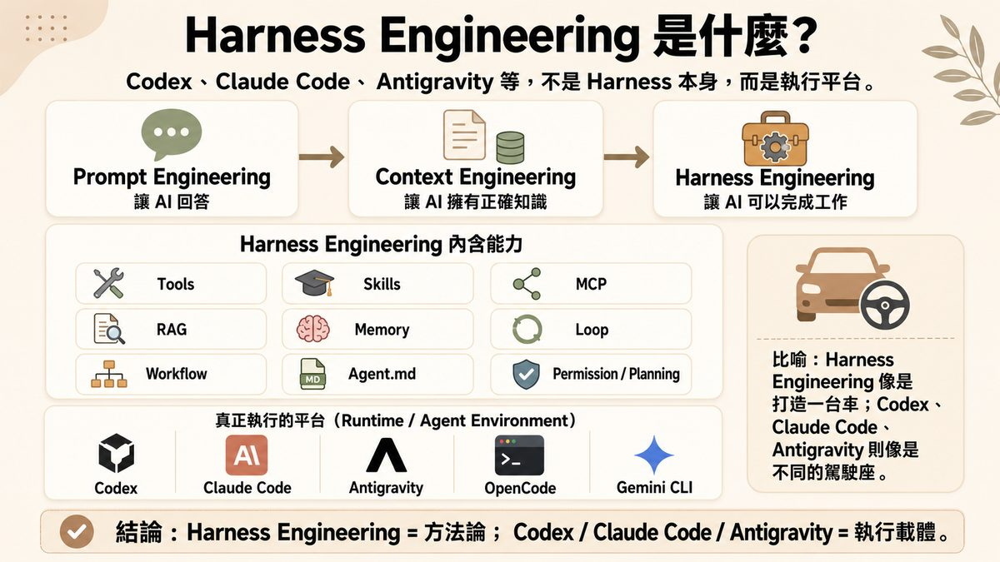
Harness Engineering 內含能力：Tools、Skills、MCP、RAG、Memory、Loop、Workflow、Agent.md、Permission/Planning。
真正執行的平台（Runtime／Agent Environment）：Codex、Claude Code、Antigravity、OpenCode、Gemini CLI。
14. 重點整理：快速回顧 OpenCode
- OpenCode 是開源、可自由切換模型的終端機 AI Coding Agent，代表 AI Coding 演進的第四代。
- 學習路徑分三階段：入門（安裝、設定、TUI）→ 核心操作（Agent、AGENTS.md、小任務）→ 進階應用（Skill、MCP、語音、專案實戰）。
- 兩種 Agent 分工：Build 負責做，Plan 負責想，先 Plan 再 Build 是好用的工作流。
- 想省錢也能有品質，Zen 與 Go 是兩種可選 Provider，依需求（品質優先 vs 成本優先）挑選。
- 更高一層看，OpenCode 屬於 Harness Engineering 這個方法論下的其中一種執行載體。
15. 資料來源與製作說明
- 原始教材：「不想花大錢，也能體驗 AI agent：OpenCode 篇」官方課程簡報 21 頁（其中 16 頁為圖文完整內容頁，其餘為分節標題過場頁，另附完整課堂錄影）。
- 製作方式：本集簡報為圖文完整的圖片型投影片；下載原始 pptx → 取出 16 張內容頁投影片原圖（對應
ppt/slides/_rels/序位）→ 逐頁親眼判讀並整理重點 → 原圖縮圖後直接嵌入本頁。內容為真實課程內容，Zen／Go 比較表格依簡報原文整理，簡報本身也標註部分文字為「依官方資料整理」。 - 誠實聲明：本頁以簡報實錄為準；本集資料夾另附課堂錄影，但簡報本身圖文已完整涵蓋操作步驟與畫面示意，故本頁未逐幀比對錄影。OpenCode 相關功能與計費方式會持續更新，實際操作請以你當下的官方網站與工具畫面為準。
- 介面參考：頁面版型沿用本站 EP29–47 系列的乾淨白底編輯風格。